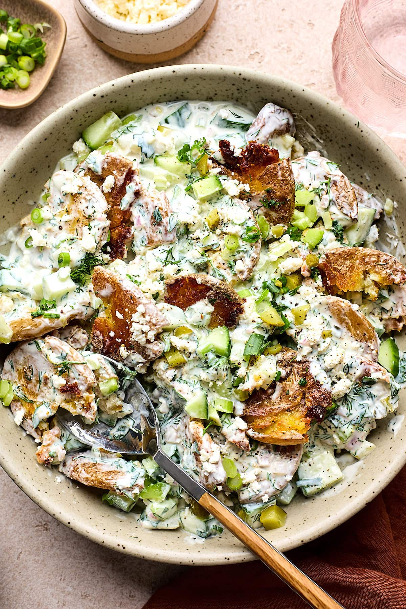

Home
Cruspy Pots, Baby!

I started making this based off a tiktok.
It is a very OK lunch option because you can make a bunch and eat it for a few days and the macros are quite friendly.
I call it Cruspy Pots because I misspelled it the first time I was recording it and I enjoy how it looks.
Ingredients
- ~1kg baby potatoes
- light soft cheese
- lemon juice
- Chicken, tuna, or your preferred protein (or none)
- 1 red onion
- ~ half a cucumber
- seasoning for the potatoes - I like to use:
- rosemary
- garlic
- sometimes za'tar or harissa
- there's really no wrong answers
- parsley
- olive oil